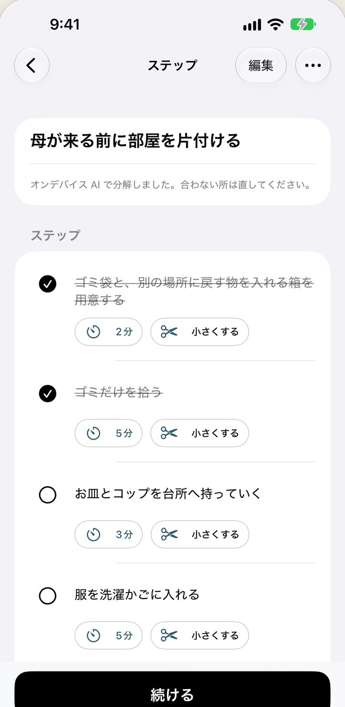
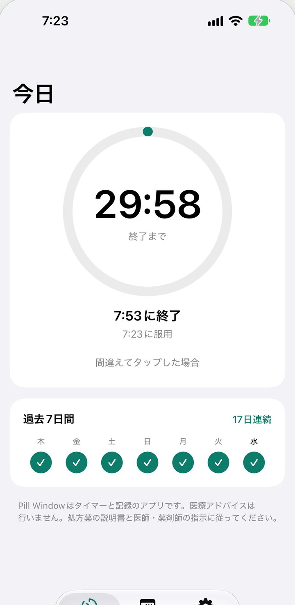
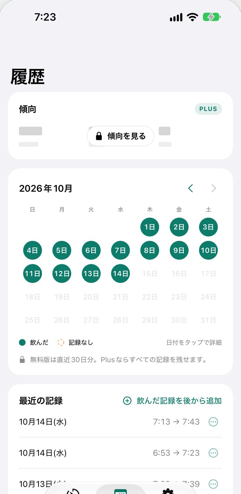

Stepsmith と Pill Window は審査中です。Crave Harbor もこれから出します。



このページを作り直しました。以前のアプリは別のページに移しました。プライバシーポリシーの URL はそのままです。
Stepsmith 1.0 と Pill Window 1.0 を Apple に提出しました。
月のカレンダーを付けました。記録し忘れた日は30日前まで足せます。
リマインダーと、ゴミ出しなどすぐ使える毎日のタスクを入れました。
対処の画面に、これまでの節約額が出るようにしました。
新しいアプリのプライバシーポリシーとサポートページを載せました。